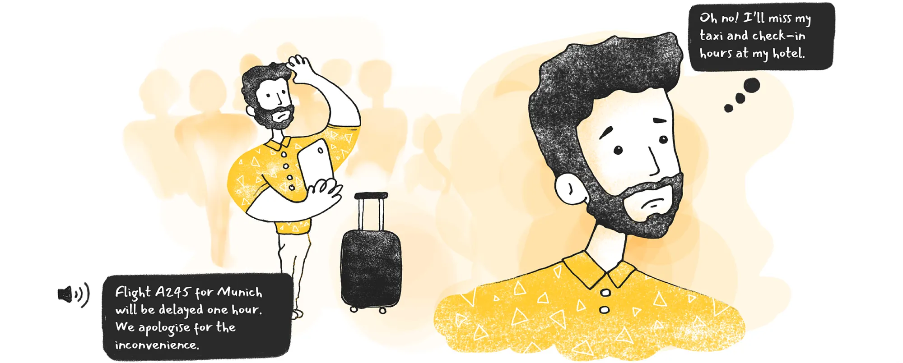
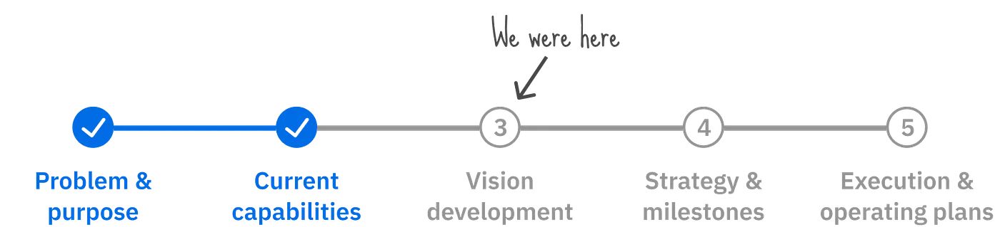
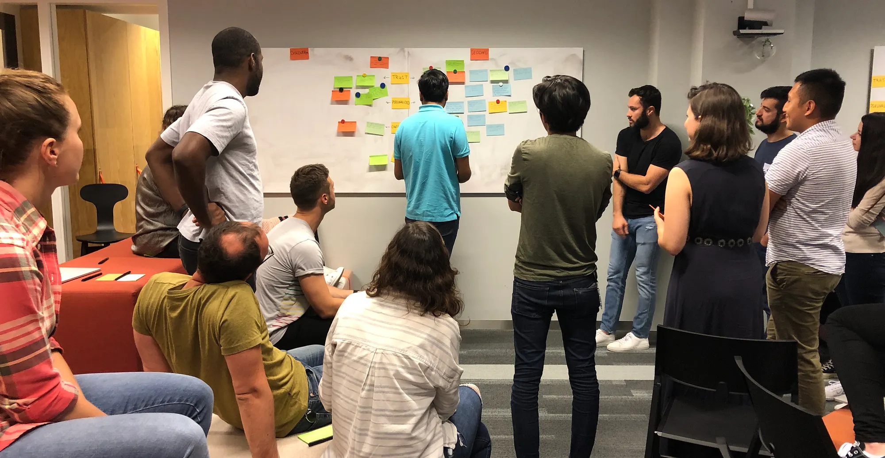
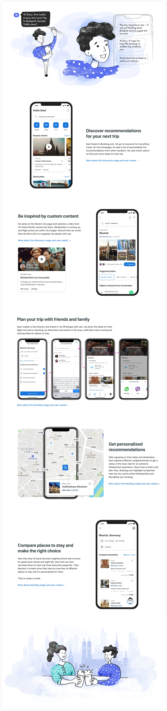
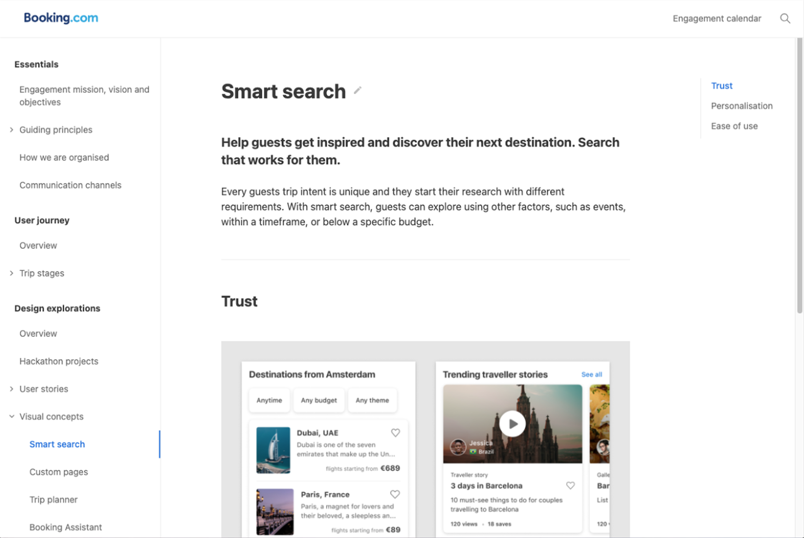
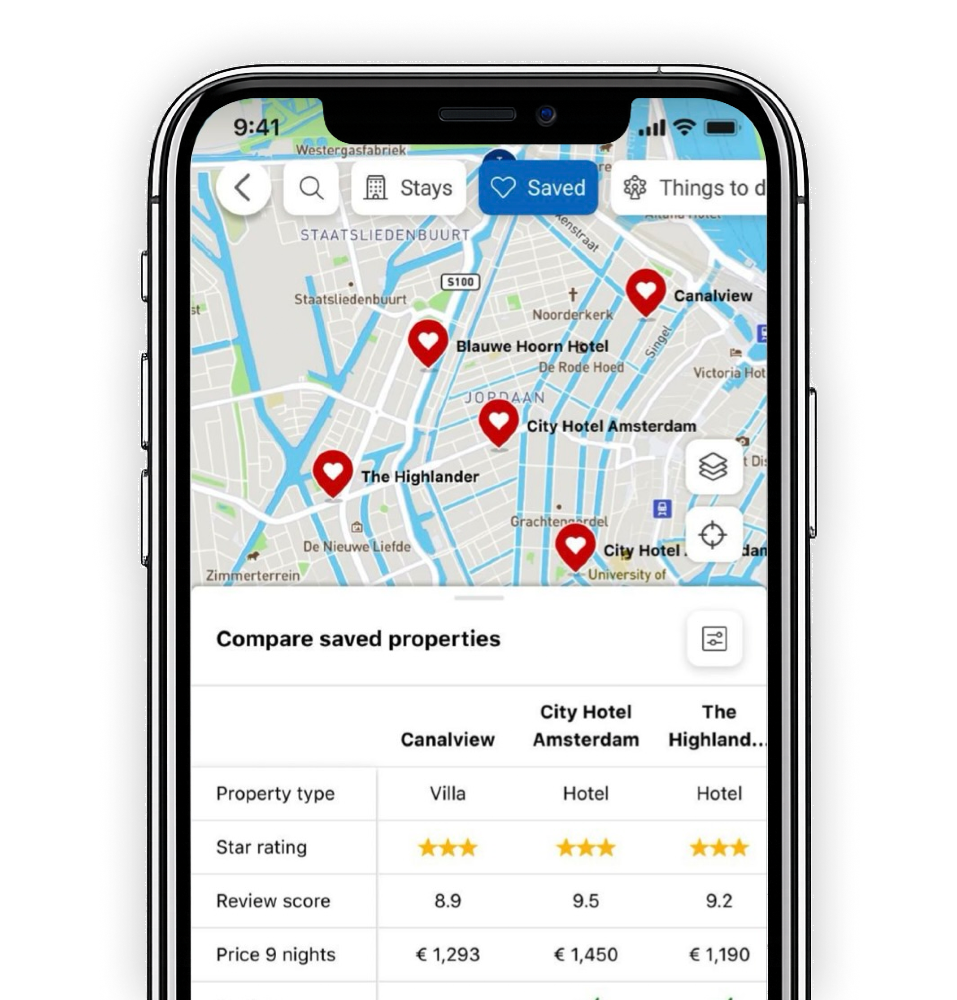

Booking.com North Star: Visualizing the Ideal Guest Experience
How a cross-functional task-force gave a newly formed org a shared picture of the future guest experience.

Project at a Glance
Problem: Following a major reorganization, Booking.com created the Engagement organization, a group focused on the guest experience from booking through post-trip. The newly formed org was still finding its footing: teams were unclear on goals, how their work connected to company-level strategy, and how to collaborate across tracks. There was no shared picture of where things were headed.
My Role: Lead of the UX task-force. I assembled and directed a cross-functional team of senior designers and copywriters, with researchers and data scientists contributing at key stages. I owned the end-to-end vision program and was a key contributor to the subsequent Horizon Planning program.
Action: Led a cross-functional team through a full vision program, from stakeholder discovery and journey mapping workshops to high-fidelity user scenarios, a department-wide launch event, and an internal Vision Hub. As a key contributor to Horizon Planning, I synthesized existing research, built on findings from a large-scale guest survey, conducted a UX analysis, and led a deep dive on one of the highest-priority underserved needs.
Result: The North Star gave the Engagement teams a shared foundation for planning and re-energized a department that had been uncertain since the reorg. The 2021 planning program produced a validated, prioritized set of opportunities that informed roadmap decisions, backed by deep dives that gave product leadership a comprehensive view of where to invest.
The Problem
In mid-2019, Booking.com reorganized its product teams to create the Engagement organization, a group focused on the guest experience from booking through post-trip. The newly formed org was still finding its footing: teams were unclear on goals, how their work connected to company-level strategy, and how to collaborate across tracks. People were uncertain about where things were headed.
Booking.com had a broader company vision, the Connected Trip, to unify the entire travel experience across flights, transport, accommodations, and attractions. The Engagement org had established its own design principles, Trust, Personalisation, and Ease of Use, but needed something more specific: a North Star grounded in their slice of that journey that teams could actually plan against.
Assembling the Task-Force
The Head of Strategy commissioned a task-force to address this. I led a team of five senior designers and two copywriters, with researchers and data scientists contributing at key stages. The goal was a shared vision that was actionable for Engagement teams, credible to leadership, and concrete enough to give the org a renewed sense of direction.

Mapping the Journey and Finding the Opportunities
Starting with Leadership
Getting the vision right started with product leadership. I led discovery sessions to surface their priorities, understand their concerns, and translate what we heard into problem statements that framed our strategic direction. Involving leadership early meant the final output reflected their thinking and addressed what mattered most to them.
Workshops Across Every Product Area
To build a shared picture of the guest experience, each task-force member led workshops within their own product area, bringing together designers and product from that part of the funnel. The workshops were structured around the org’s design principles, Trust, Personalisation, and Ease of Use, which gave teams a consistent lens for surfacing opportunities. This brought in diverse perspectives and gave teams a stake in the outcome.
Workshop outputs were translated into How Might We (HMW) statements, framed to shift the conversation from fixing what was broken to identifying what was possible, and consolidated into a central repository so the task-force was working from the same foundation.

From Observations to Opportunities
With a complete view of the journey in hand, we needed to narrow the opportunity space. I developed a prioritization framework to evaluate each opportunity against strategic fit, user value, and technical readiness, then partnered with data scientists to validate our qualitative findings against behavioral data. That combination gave us confidence in the opportunities we took into ideation.
Narrating and Socializing the Vision
With a prioritized set of opportunities, the task-force needed to translate them into something the organization could actually see itself in. I decided to frame the output as three narrative user scenarios, each tracing a complete guest journey through the future state across Discover & Decide, Prepare & Travel, and Reminisce. Individual designers owned each scenario; I shaped the content and framing across all three to make sure they held together as a single coherent vision.

The Launch
The launch brought the full department together for the first time around a shared vision. It was an event – drinks, posters, and the full department and leadership seeing the scenarios come to life. For the first time since the reorg, we felt like we were moving in the same direction.

The Vision Hub
The launch created real momentum, and I wanted to build on it. I led the development of the Vision Hub, an internal site that made the work immediately accessible to everyone across the org. I expanded the scope beyond the vision itself to include the org's mission and objectives, leadership structure, and communication channels, recognizing that a newly formed org needed more than a shared picture of the future. It needed a shared operating foundation. I made deliberate choices about IA and navigation so the content could be self-serve.

Horizon Planning
The North Star vision fed directly into Horizon Planning, a multi-year strategic planning program that gave the Engagement org a structured way to identify, size, and prioritize opportunities across the full guest journey. Sponsored by the Director of Product, I worked alongside two senior researchers and a data scientist to identify and size the highest-opportunity areas across the guest experience.
Sizing the Opportunity Space
We synthesized existing research and data to surface and prioritize opportunities across the org's Trust, Personalisation, and Ease of Use principles, then validated them through a large-scale guest survey measuring importance and satisfaction across 26 need statements with over 13,000 responses.
The results identified 12 underserved needs. I conducted a UX analysis alongside the findings, providing concrete examples of where the current experience was falling short against each need.
Property Comparison Deep Dive
The top underserved needs each became a deep dive. I led the property comparison deep dive, a 30+ page document structured to give product leadership everything needed to evaluate and act on the opportunity. It covered an executive summary, opportunity sizing and performance ranking, current insights and knowledge gaps, strategic hypotheses and recommendations, related internal initiatives, and supporting quantitative data from past experiments and data science analysis.

Impact and Outcomes
A Foundation for the Org
The North Star gave the Engagement teams a shared foundation they had lacked since the reorg. For the first time, product teams across every part of the funnel were working from the same picture of the future guest experience. The Vision Hub made that foundation persistent, teams used it independently for planning, brainstorming, and onboarding new colleagues, without needing design to re-present the work.
Planning Grounded in Evidence
The 2021 planning program converted that directional clarity into a prioritized investment framework. The guest survey, conducted across over 13,000 responses, produced a quantitatively validated ranking of guest needs across the full journey. The 12 underserved needs it identified informed 2021 roadmap priorities, giving leadership a structured, data-driven basis for deciding where to focus.
The property comparison deep dive, which I led, addressed the fourth-ranked underserved need across the entire guest journey. The document gave product leadership and teams working on the topic a comprehensive view of the opportunity: where guests were being failed, how significant the gap was, and where investment was most warranted.
Final Reflection
I led a cross-functional team through ambiguity, navigated executive stakeholders, and held the quality and coherence of the output across every workstream. Executive sponsorship from the Head of Strategy gave the task-force the organizational weight it needed, but the team made it work — talented, rigorous, and genuinely committed to getting it right.
The harder problem was always what comes next. The Horizon Planning work was the answer to that, taking the shared direction the vision created and converting it into a validated, prioritized set of opportunities that leadership could act on. The scope of both programs was significant, spanning the full Engagement org with design, product, engineering, research, and data science all contributing.
What I carry from this work is a clear point of view on how vision and strategy connect. A North Star only has value if it creates the conditions for better decisions, and Horizon Planning was where that connection became concrete.
Jeri consistently delivers big amounts of high-quality output within very short timeframes. I've been amazed at the work she managed to produce, basically being one of the biggest driving forces behind the very important Horizon Project...I believe that without Jeri the Horizon Project couldn't have been at the stage it is in now nor the level of quality we've seen delivered.